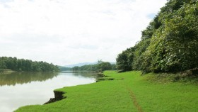
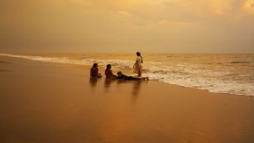
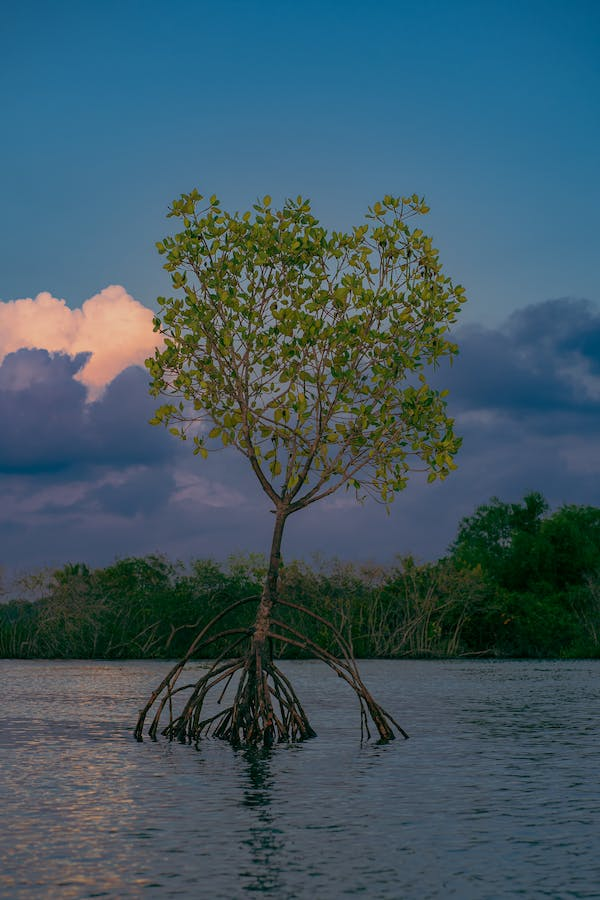
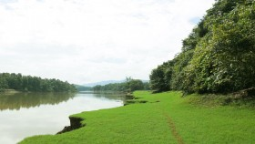
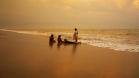
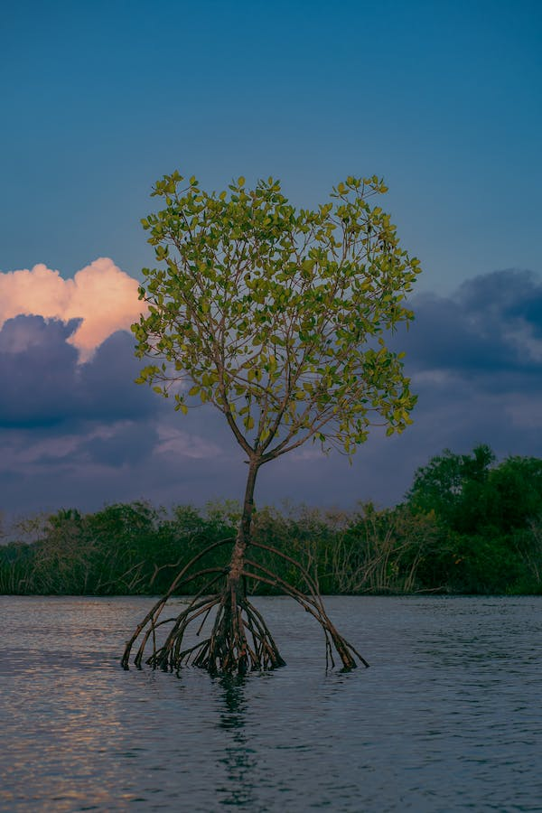

Kerala, The Land of Diversity
Kerala, a jewel of India's southwestern coastline, beckons travelers with its mesmerizing blend of natural beauty, cultural richness, and remarkable diversity. Known as "God's Own Country," Kerala is a tropical paradise that boasts a diverse range of attractions for tourists. Its lush green landscapes are embroidered with meandering backwaters, pristine beaches, and dense rainforests, making it a haven for nature enthusiasts. The backwaters, with their tranquil houseboat cruises, offer a unique and serene way to explore the region's waterways, while the Western Ghats provide adventure seekers with opportunities for trekking and wildlife safaris. Kerala's shoreline is adorned with palm-fringed beaches, each with its own unique charm, from the bustling shores of Kovalam to the tranquil ambiance of Varkala. What truly sets Kerala apart is its incredible cultural and ethnic diversity. The state is a microcosm of India's multicultural tapestry, with a rich mosaic of languages, religions, and traditions coexisting harmoniously. Malayalam, the state's official language, is spoken by the majority, but there is also a significant presence of various other linguistic communities. Kerala's religious landscape is equally diverse, with a blend of Hinduism, Christianity, Islam, and even syncretic beliefs like the ancient practice of Sree Narayana Dharma. Festivals and rituals, such as Onam and Thrissur Pooram, offer visitors an insight into the state's vibrant cultural tapestry. Kerala's cuisine is a mouthwatering melange of flavors, incorporating spices and ingredients like coconut, tamarind, and curry leaves. Whether it's the sumptuous Sadya or the delectable seafood, the food in Kerala is an irresistible delight for foodies. In essence, Kerala's tourism isn't just about its natural wonders; it's a journey through a diverse and culturally rich tapestry that leaves a lasting impression on all who visit.
Kerala's beauty is a breathtaking fusion of natural wonders that have earned it the title "God's Own Country." The state's landscape is a symphony of green, with its dense tropical forests, rolling hills, and verdant plantations. The Western Ghats, a UNESCO World Heritage Site, encompassing parts of Kerala, showcase the state's rugged and picturesque topography. These hills are adorned with tea, coffee, and spice plantations that create a mesmerizing patchwork of vibrant green hues. The mist-kissed hill stations like Munnar, Wayanad, and Thekkady provide a serene escape for those seeking cool, tranquil retreats, surrounded by sprawling tea gardens and spice-scented air. Kerala's most iconic feature is undoubtedly its enchanting backwaters. The intricate network of lagoons, canals, and estuaries, lined with swaying palm trees, is a unique landscape that can be explored on traditional houseboats. These houseboats, often luxuriously appointed, offer travelers a chance to meander through this idyllic aquatic world, observing traditional village life along the way. The backwaters also serve as a hub for eco-tourism, supporting diverse bird species and aquatic life. The serene Alleppey (Alappuzha) backwaters and the tranquil beauty of Kumarakom are some of the most sought-after destinations for this enchanting experience. Kerala is also blessed with an extensive shoreline that boasts some of the finest beaches in the world. From the bustling and lively Kovalam Beach to the serene and less-crowded Varkala Beach, the coastal stretches are a perfect blend of golden sands and azure waters. The state's beaches offer not only relaxation but also water sports, making them a paradise for beach lovers and adventure enthusiasts alike. In addition to this, Kerala's lush tropical forests, including the Silent Valley and Periyar National Park, are home to a variety of wildlife species, including elephants, tigers, and numerous bird species. The state's protected areas provide opportunities for wildlife enthusiasts to engage in safaris and nature walks, offering a glimpse into the rich biodiversity that Kerala preserves. Kerala's natural beauty isn't just limited to its landscapes; it's also reflected in its refreshing climate and clean air. The state's pleasant weather and temperate climate make it a year-round destination for tourists. This, combined with its diverse topography and cultural richness, ensures that Kerala remains an irresistible draw for travelers seeking a destination that's as beautiful as it is diverse.


 




